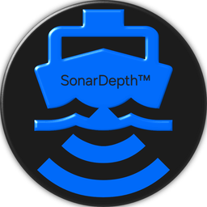

Reads RSD recordings
Point it at the recordings from your sonar unit's memory card and the trace opens on screen. No conversion step, no manufacturer software required.

Windows desktop application
Consumer sonar units save every scan as an RSD recording that only their own screen will open. SonarDepthPro opens those files on a normal computer, at full size, whenever you want.
See the pricePoint it at the recordings from your sonar unit's memory card and the trace opens on screen. No conversion step, no manufacturer software required.
Scroll back through a whole trip, stop on anything interesting, and look at it on a screen larger than the one bolted to the boat.
Read depth off the trace and inspect the returns properly, instead of squinting at a five inch display in daylight.
One purchase, one license key, activated inside the application. Your key stays valid for the version you bought.
Anglers, boat owners and anyone else who records sonar and wants to look at it afterwards. If you have ever finished a day on the water thinking there was something on the screen you did not have time to study, this is the tool for that.
SonarDepthPro runs on Windows. It reads your own recordings from your own equipment and does not require an account or an internet connection to work, beyond the one-time license activation.
A short walkthrough of SonarDepthPro opening a recording and reading it back on a desktop screen.
A single payment for a permanent license. Updates within the version you bought are free. There is no recurring billing, no trial that converts into a charge, and no add-ons.
Payment is handled by Lemon Squeezy, who act as the merchant of record and will appear on your card statement. Your license key is delivered by email immediately after purchase.
Buy SonarDepthProEmail support@visionframe.se with any question about the software or your license. Refund conditions are set out in the refund policy, and the full purchase terms are in the terms and conditions.